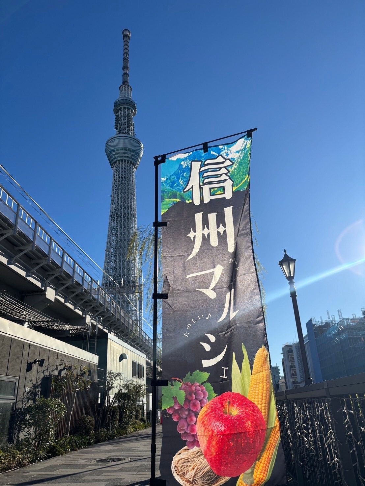
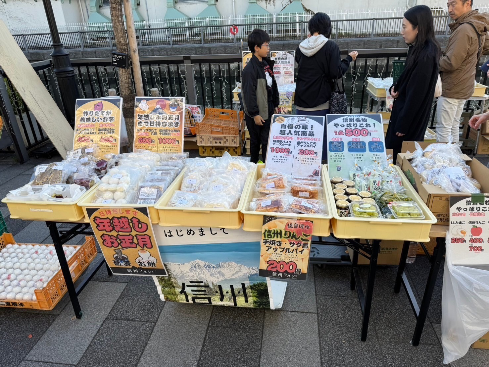
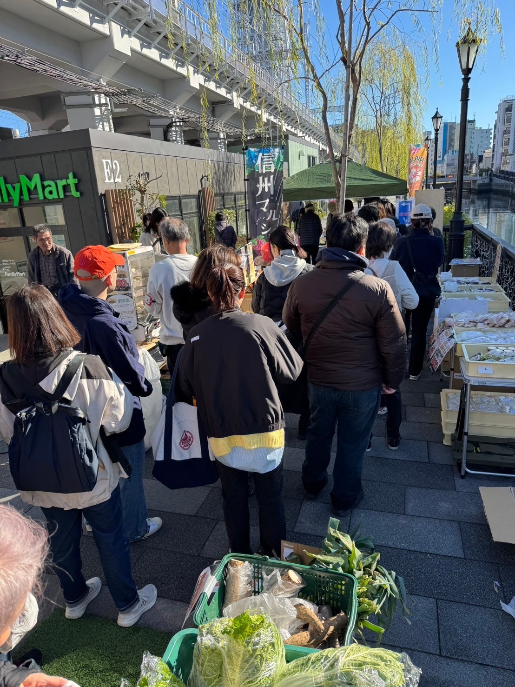
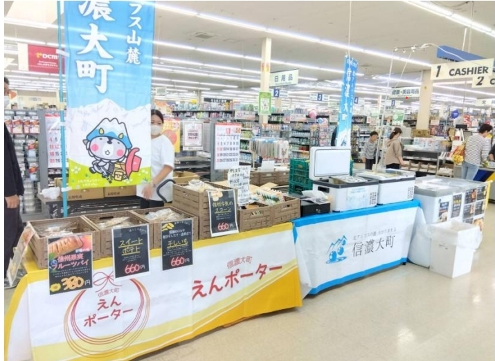

長野の美味しいとワクワクを旅の思い出に
Produced by MONDOKOLO corp.
長野県産の厳選された素材を使用した、自社製造 of 無添加スイーツや信州特産品を販売いたします。
「ホッと一息つきたい」休憩需要と、
長野へ旅行に行った気分に浸れる「お土産」需要の双方を満たすラインナップを展開しております。
実際の開催現場の様子

東京ミズマチ開催
目を引く鮮やかな大型のぼり旗

圧倒的な集客実績
ロケーションや天候を問わず発生する長蛇の列

省スペース設営
2m×4mの範囲でも展開可能な売場

屋外のテント設営だけでなく、商業施設内の催事スペースや冷凍・冷蔵を必要とする売り場構築もコンパクトに実現。施設全体のイメージを崩さず、信州ブランドの「信頼感」と「賑わい」をプラスします。
安曇野産クリームチーズを贅沢に使用した、ECサイトでもランキング１位を獲得した自慢の逸品。
信州の豊かな自然で育った牛乳とたまごを贅沢に使用。
信州りんごのアップルパイ、長野牛乳スコーン、焼き芋わらび餅パフェなど
白馬産の豚肉を贅沢に使い、肉汁溢れる手作りの特大肉まん。軽食に最適です。
観光客に根強い人気の定番名産品。
提携農家から直接仕入れた（または自社収穫した）信州りんご、梨などの新鮮な果実をお届けします。
関東圏（東京ミズマチ、大宮など）や大型商業施設において多数 of 開催実績があり、悪天候や人通りの少ない立地であっても長蛇の列を作る高い集客力を誇ります。（最高で１日に６００組の来場実績あり）。コンパクト（２ｍ×４ｍ程度～）で活気のある売り場を構築し、エリア全体の賑わい創出に貢献します。
弊社では、農家さんが売り先に困り廃棄していた「訳アリ品（規格外品）」の果物や野菜も積極的に仕入れ、自社スイーツの原料として加工・活用しています。美味しさはそのままに食品ロス削減を目指すこの取り組みは、サスティナブルな社会への貢献として、お客様からも非常に高い共感と支持をいただいております。
「できるだけ余計なものは入れない」をモットーに、日々レシピの改良を重ねて自社製造をおこなっております。信州の牛乳、たまご、果実といった確かな素材の味をダイレクトに味わえる無添加スイーツは、健康志向のファミリー層からシニア層まで安心しておすすめできる品質です。
ただ出店して待つだけではなく、自社での新聞折り込みチラシやポスティング、WＥＢ媒体を通じた周辺地域への告知を積極的に行っています。遠方からのドライブ客だけでなく、周辺地域の住民の皆様が「信州マルシェ」を目的に足を運ぶような、能動的な誘客をお約束します。